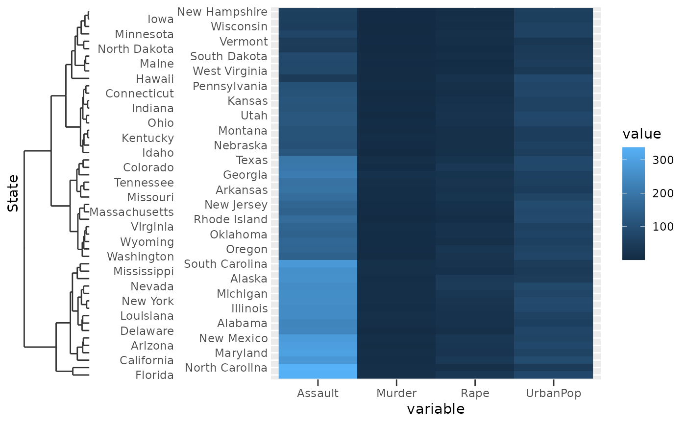
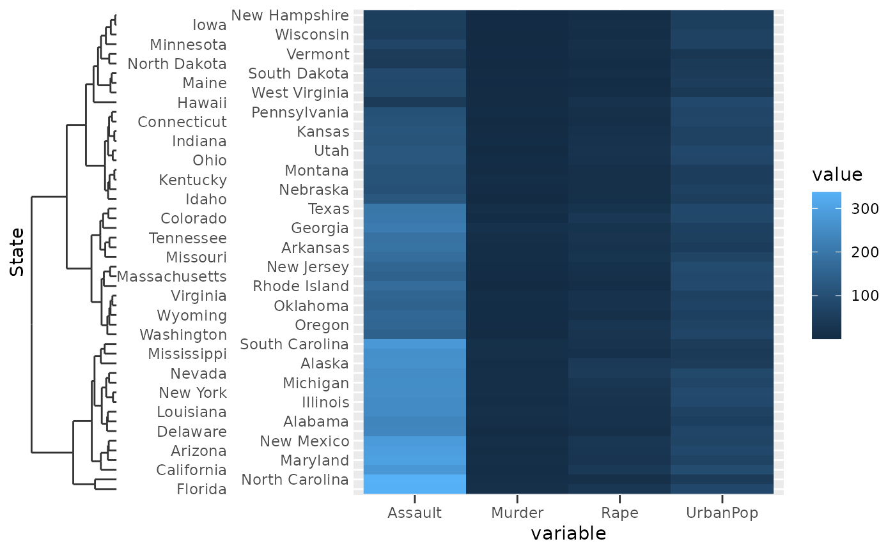

Visual representation of a discrete variable with hierarchical relationships
between members, like those detailed in
scale_(x|y)_dendrogram)().
Arguments
- title
A character string or expression indicating a title of guide. If
NULL, the title is not shown. By default (waiver()), the name of the scale object or the name specified inlabs()is used for the title.- check.overlap
silently remove overlapping labels, (recursively) prioritizing the first, last, and middle labels.
- n.dodge
The number of rows (for vertical axes) or columns (for horizontal axes) that should be used to render the labels. This is useful for displaying labels that would otherwise overlap.
- order
Used to determine the order of the guides (left-to-right, top-to-bottom), if more than one guide must be drawn at the same location.
- position
Where this guide should be drawn: one of top, bottom, left, or right.
- label
A
logical(1). IfTRUE, labels are drawn at the dendrogram leaves. IfFALSE, labels are not drawn.- trunc_lower, trunc_upper
The lower and upper range of the truncated axis:
NULLto not perform any truncation.A
functionthat takes the break positions as input and returns the lower or upper boundary. Note that also for discrete scales, positions are the mapped positions asnumeric.A
numericvalue in data units for the lower and upper boundaries.A
unitobject.
- colour, color
A
character(1)with a valid colour for colouring the axis text, axis ticks and axis line. Overrules the colour assigned by the theme.- dendro
Relevant plotting data for a dendrogram such as those returned by
ggdendro::dendro_data().
Details
The dendrogram guide inherits graphical elements from the
axis.ticks theme element. However, the size of the dendrogram is set
to 10 times the axis.ticks.length theme element.
Examples
clust <- hclust(dist(USArrests), "ave")
# Melting USArrests
df <- data.frame(
State = rownames(USArrests)[row(USArrests)],
variable = colnames(USArrests)[col(USArrests)],
value = unname(do.call(c, USArrests))
)
# The guide function can be used to customise the axis
g <- ggplot(df, aes(variable, State, fill = value)) +
geom_raster() +
scale_y_dendrogram(hclust = clust,
guide = guide_dendro(n.dodge = 2))
# The looks of the dendrogram are controlled through ticks
g + theme(axis.ticks = element_line(colour = "red"))
 # The size of the dendrogram is controlled through tick size * 10
g + theme(axis.ticks.length = unit(5, "pt"))

# The size of the dendrogram is controlled through tick size * 10
g + theme(axis.ticks.length = unit(5, "pt"))
